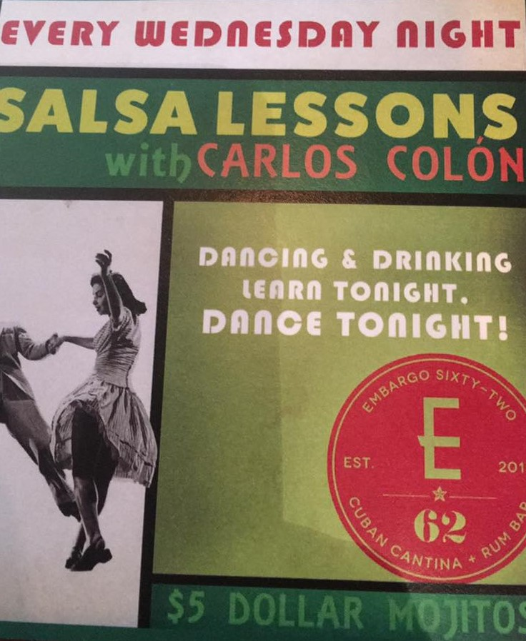

IMMIGRANT HISTORY OF VENEZUELA XXI
One of the first Venezuelan migration wave was during the Chavism (after Hugo Chávez's victory in the 2004 recall referendum.) Several countries worldwide reported a signifcant amount of venezuelan immigrants.
The Venezuela open to the reception of foreigners and without significant volumes of its inhabitants is leaving for other countries, in much of its contemporary history, became at the end of the second decade of the 21st century. The main concern of neighboring countries and specialized organizations by the flow of Venezuelans is the psychological impact and the xenophobia in countries mainly latin americans in which those who arrive to other lands are received not infrequently.
Venezuela's over-reliance on its vast oil reserves - 96 per cent of its earnings come from crude - caused a problem when the price plummeted in 2014, causing shortages of foreign capital. The government's response was to print more money, but that only pushed up inflation, ushering in four years of recession. Paez says "insecurity" and the "repudiation of the... ownership of one's own life," are the main factors driving Venezuelans to flee the country. Add to that "economic deterioration ... the terrible scarcity and value of the bolivar" and the situation has become "a humanitarian crisis," Paez argues.
NEW EVENTS
Salsa Lessons
Every wednesday join Carlos Colon for some Salsa! Embargo restaurant will be offering $5 mojitos
Learn More...
New Year's Eve Countdown
The night will vibrate at Palomas Tapas Bar for our annual countdown. We will be offering grapes!

Learn More...
Nelson Arrieta Concert
Concierto en Nashville! Arrieta will be join us at the Bar Rest Bucanas in his tour "Asi es la vida"

Learn More...